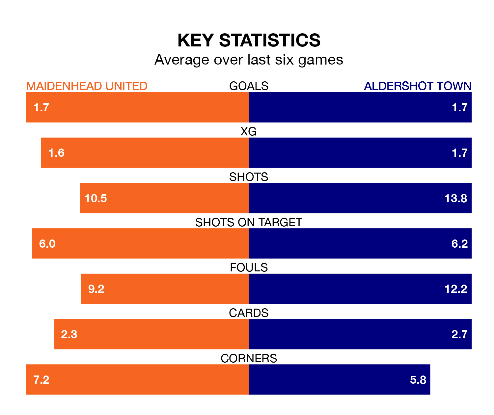

Aldershot Town are strong favourites to take all three points despite Maidenhead United's home advantage in Friday's match at the York Road Stadium.
*Betting Company* are offering odds of 1.83 on Aldershot sealing the win, with the visitors sitting fifth in the National League table.
Maidenhead, who are 20th in the league and 19 points behind the Shots, are priced at 3.5 to win. A draw is set at 3.37.
With 44 goals in 40 games so far this season, Maidenhead are the league's third-lowest scorers with 1.1 goals per game. But they are conceding fewer than average too, letting in 58 goals at a rate of 1.4 per game.
Aldershot, meanwhile, are above average scorers, with 1.7 goals per game, compared to a league average of 1.5. They have conceded 1.8 goals per game.
In the last 10 years, Maidenhead and Aldershot have played each other on 13 occasions. Maidenhead won two of them, Aldershot five, and they drew six times.
On average, Maidenhead scored 1.4 goals and the Shots 1.8 in those matches.
Their last meeting was on October 24, when Aldershot won 4-2 at home.
United are in disappointing form in the National League, with two wins and four losses from their last six games.
With three wins and a draw over that period, Town's form is better – they have taken 10 points from 18, compared to the home side's six.
Maidenhead's last match was on Saturday, a 1-0 loss against Rochdale.
Aldershot drew 1-1 with Solihull Moors last time out, also on Saturday, with Cian Harries on the scoresheet.
Updated: 12:39 (UTC), 26/03/24